这里讲述一下
下载的入口还挺多……这里下载的 exe 版本是
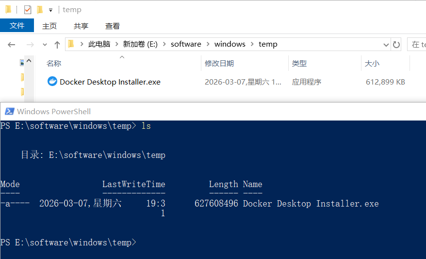
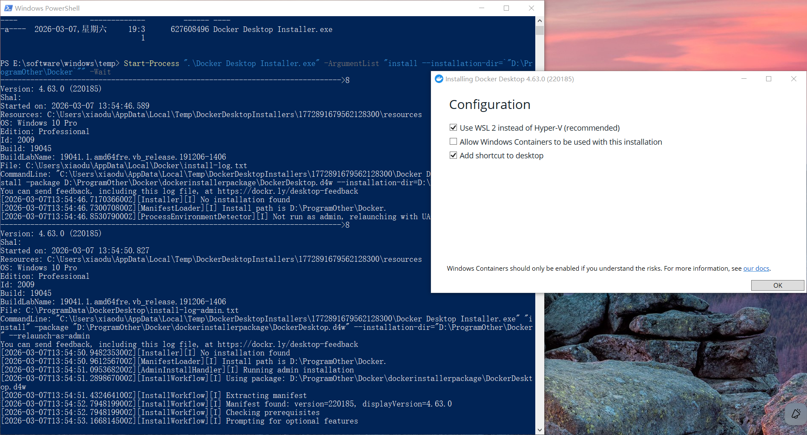
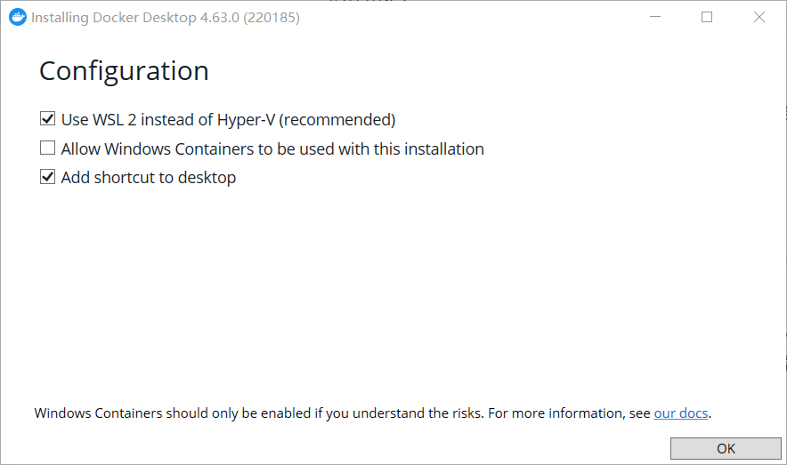
下面是
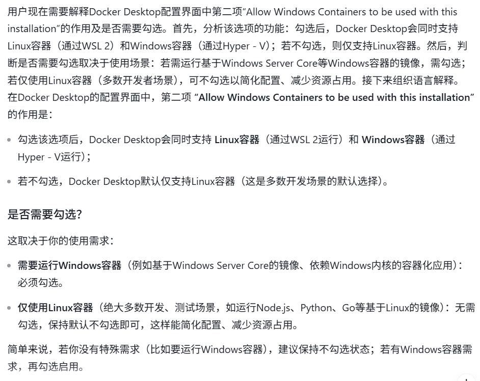
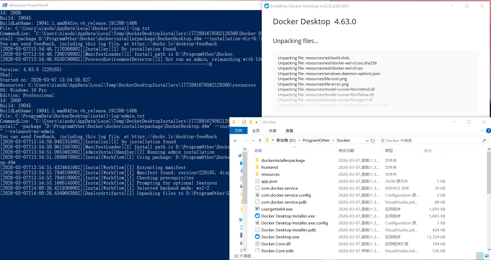
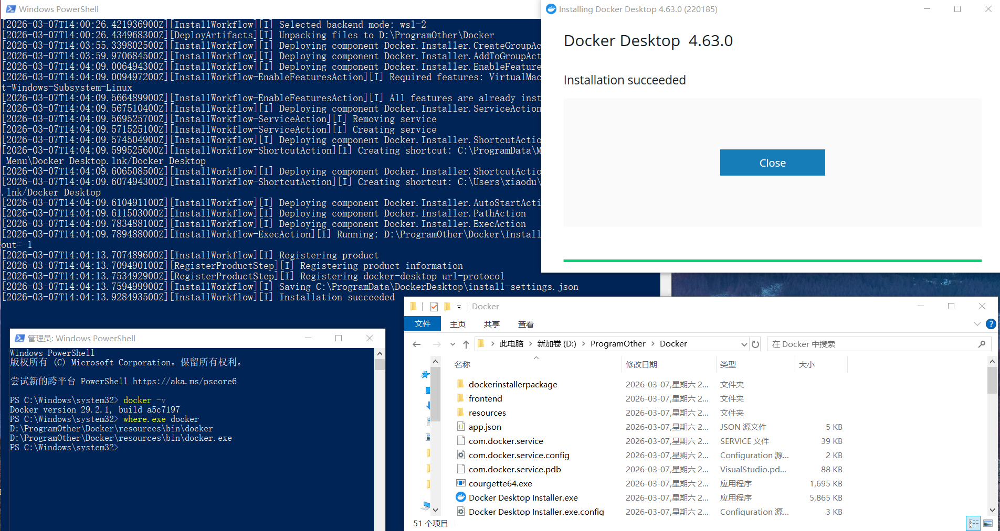
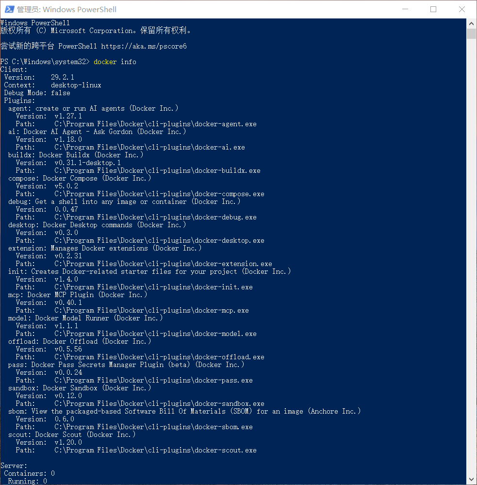
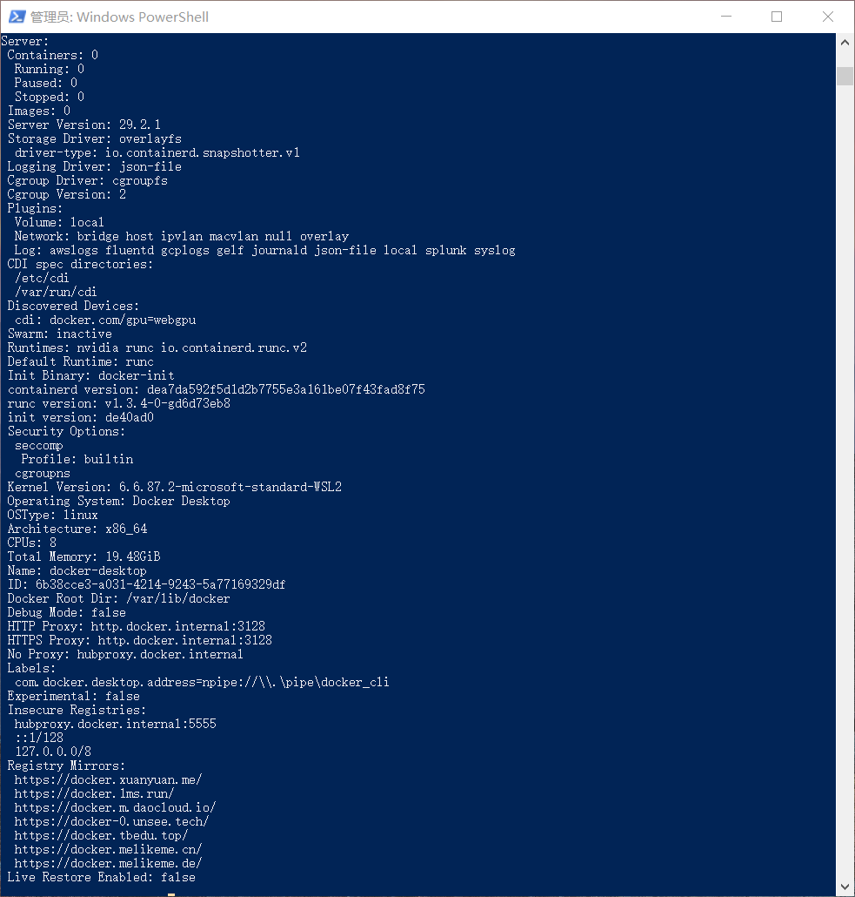
这里咱得说下，
Start-Process ".\Docker Desktop Installer.exe" -ArgumentList "install --installation-dir=`"D:\ProgramOther\Docker`"" -Wait
主要是讲可以配置路径的都弄到非 C 盘，你懂的；还有就是设置国内镜像了
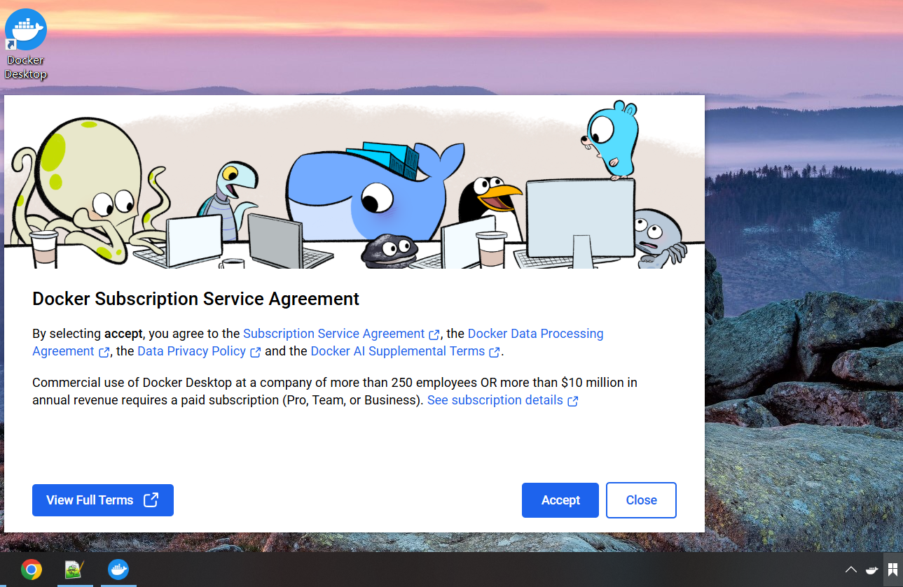
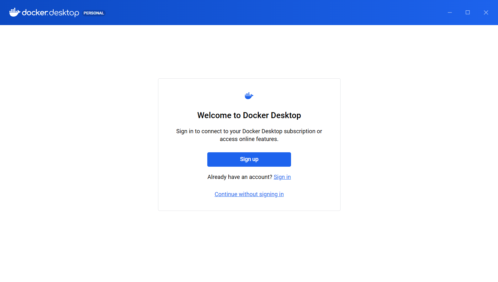
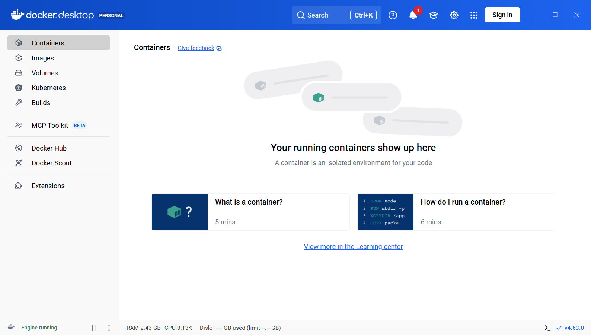
上面的可以直接跳过，下面的才是重点
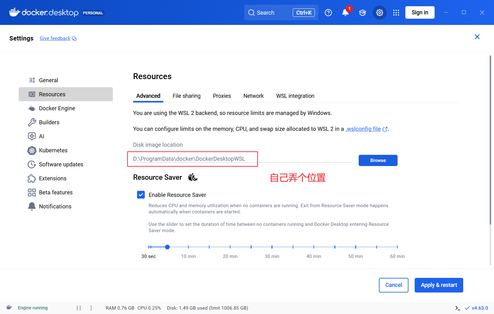
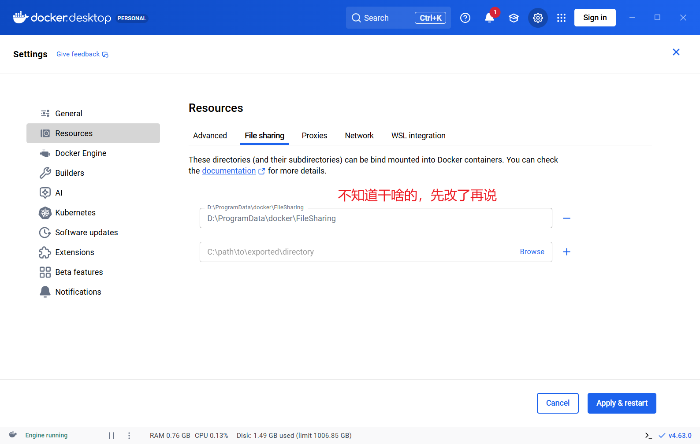
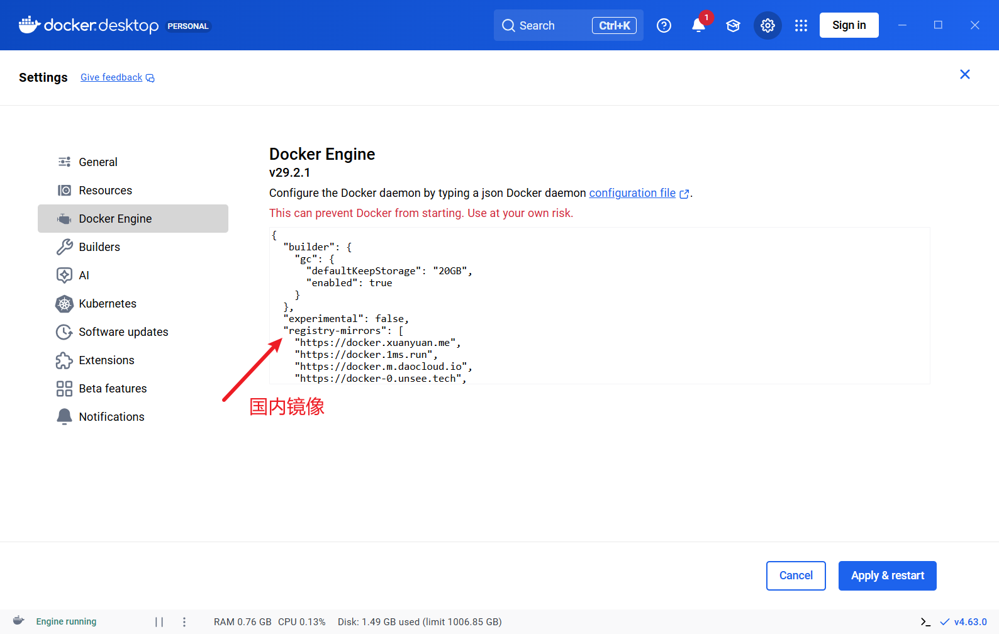
请谨慎操作，看好了在复制！！！
Remove-Item -Recurse -Force -ErrorAction SilentlyContinue `
"$env:USERPROFILE\.docker", `
"$env:USERPROFILE\AppData\Local\Docker", `
"$env:USERPROFILE\AppData\Local\Temp\DockerDesktop", `
"$env:USERPROFILE\AppData\Local\Temp\DockerDesktopInstallers", `
"$env:USERPROFILE\AppData\Roaming\Docker"